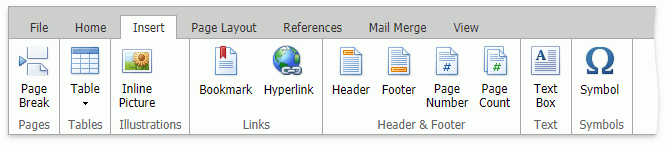
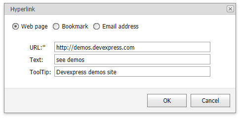
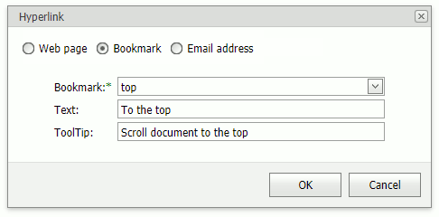

Bookmark and Hyperlink
You can add hyperlinks to external locations or associated with bookmarks in the same document.
Bookmarks
A bookmark can refer to a position in a document or to a document range (for example, portion of text, image).
Add a bookmark
- Select a document range or position the pointer.
- Click the Bookmark button in Insert tab's Links group...

...or right-click the selected document range and select the Bookmark... command in the context menu.

This invokes the Bookmark dialog box.

- Specify a bookmark name and click Add.
Note
A bookmark name can contain numbers, letters, and the underscore symbol ("_"), and must begin with a letter.
Delete a bookmark
Invoke the Bookmark dialog, select a bookmark, and click Delete.
Bookmark navigation
Invoke the Bookmark dialog, select a bookmark, and click Go To to navigate to the bookmark.
Hyperlinks
A hyperlink is a document range (for example, portion of text, image) that you can use to go to a webpage, to another place within the same document, or to create a new email message.
Click a hyperlink while pressing CTRL to navigate to the link.
Add a hyperlink
- Select a document range and click Hyperlink in Insert tab's Links group, or right-click the selected document range and click Hyperlink... in the context menu to invoke the Hyperlink dialog box.
*Use the option buttons at the top of the dialog to change the hyperlink's destination.
Web page

Inserts a hyperlink to a web page.
Specify the hyperlink's navigation URL (required), text, and tooltip, and click OK.
Bookmark

Inserts a hyperlink to a bookmark in the same document.
Select a bookmark's name from the drop-down list (required), and specify the hyperlink's navigation text and tooltip, and click OK.
Email address

Inserts a hyperlink that creates a new email message.
Specify an email address (required), message subject, link text and tooltip, and click OK.
Note
Hyperlink's text automatically appears in the Text editor when it is specified for a portion of text. You cannot specify hyperlink text for some elements, for example, images.